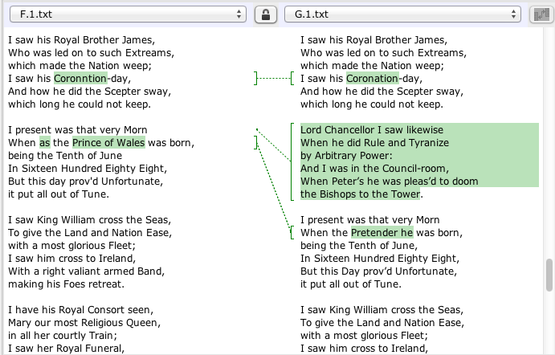

The Wandering Jew's Chronicle
4. The ballad in the marketplace (1)
The edition of the Chronicle that this paper accompanies provides digital images and transcriptions of one copy of each edition of the ballad and a bibliography. A summary of editions of the ballad by monarchical version is provided below:
|
Charles I |
1625-1649 |
[1] 1 |
|
Commonwealth |
1649-1660 |
0 |
|
Charles II |
1660-1685 |
3 |
|
James II |
1685-1688 |
0 |
|
William and Mary |
1688-1702 |
[1] |
|
Anne |
1702-1714 |
1 |
|
George I |
1714-1727 |
1 |
|
George II |
1727-1760 |
6 |
|
George III |
1760-1820 |
2 |
|
George IV |
1820-1830 |
1 |
Table 1. Editions of the Chronicle by regnal version.
Numbers in brackets in Table 1 denote editions known from external evidence to have been printed, but which are now lost. A first edition of the ballad is suggested by an entry in the Stationers' Register (the record of the right to print works maintained by the Stationers' Company of London) for 11 August 1634, which records that the London bookseller Thomas Lambert held the right to publish 'The wandring jewes cronicle.'[1] It is not surprising that no copy of the ballad published under Lambert's name appears to have survived, not uncommonly for a cheap broadside ballad, as only around 25% of registered ballad titles are now extant.[2] Another edition that does not survive is shown by a record of two copies of an edition updated to the reign of William and Mary in a catalogue of the library of the antiquary Thomas Hearne.[3]
Most editions of The Wandering Jew's Chronicle include an imprint, or an advertisement of production and sale by a bookseller - a publisher, in the modern sense. They may also list a printer, retailer or a combination of these trade functions, sometimes acting in partnership. Imprints provide only a glimpse of the process by which a ballad was brought to market. The usual supply chain was from the printer, acting under the entitlement and capital of a bookseller, through to wholesale distribution and on to retail sale by nameless small traders. It is largely for those small traders, or an intermediary supplier, that imprints are provided, advertising where more ballads can be obtained.
The lower end of the supply-chain - ballad singers and sellers - are among the least documented members of the trade, although there are some first-hand accounts, dating from the latter part of the Chronicle period, by sellers such as Dougal Graham, David Love and John Magee.[4] Although locally-important bearers of news and entertainment, ballad sellers' status was generally precarious. While Graham and Love were artisans retailing their own productions, other vendors barely subsisted within the authorised economy and were at one remove from begging. Ballad sellers might come under suspicion for both their itinerant patterns of trading (an occupation which was at various times officially licenced and taxed)[5] and, on occasion, for the content of their wares. Tessa Watt reports instances, at the beginning of the Chronicle period, of ballad-singers and sellers arrested for vagrancy, or for singing 'libellous and scandalous balletes.'[6] Paula McDowell similarly quotes a 1735 letter to The Grub-street Journal in which 'Democritus' excoriates the 'scandalous practice of ballad-singing' as 'the bane of all good manners and morals . . . a continual nursery for idlers, whores, and pick-pockets.'[7] If ballad sellers were objects of suspicion, then singing and selling the Wandering Jew's Chronicle could have served as an oath of loyalty, particularly during politically unstable times.[8] The Chronicle might even have granted the singer a certain dignity by association with the Wandering Jew, pleading for protection from the robbery, violence or suspicion of criminality that all travelling tradespeople risked.[9]
While sparse records of economic and social history, the imprints do at least help in establishing dates of publication. Although the regnal date of the monarch with which a version ends clearly provides the earliest possible date for a ballad's composition (otherwise it would be a prophecy, not a history), it does not necessarily indicate a latest possible date. The Grove edition (A.2) for example, is retrospective, concluding as it does with Charles I on the throne (presumably as given on the lost 1634 edition): but it was published around 1656, some seven years after Charles' execution, following a fresh registration with the Stationers' Company, and certainly printed after 1650, based on evidence from its woodcuts, which will be explored later.[10] While the Grove edition seems to be almost a defiance of Commonwealth-period history, all the other Chronicles were probably published during the reign with which they conclude, otherwise they would have been of little value in the market. A listing of the imprints, combined with external information on their corresponding dates, is given in Table 2.[11]
|
A.2 |
London: Printed for Francis Grove on Snow-Hill. |
1660-1663 |
|
C.1 |
London, Printed for F. Coles, T. Vere, and J. Wright. |
1665-1674 |
|
C.2 |
Print[ed for] F. Coles, T. Vere, J. Wright. and J. Clark. |
1674-1679 |
|
C.3 |
Printed for I. C[larke]. W. T[hackeray]. and T. P[assinger]. |
1684-1686 |
|
F.1 |
London: Printed by and for C. Brown, and are to be sold by the Bookselllers of Pye-corner and London-bridge. |
1702-1707 |
|
G1.1 |
London: Printed by and for [C. Brown?] and T. Norris and sold by [J. Walter?] at the Golden [Ball in Pye-corner]. |
1714-1716 |
|
G1.2 |
London: Printed by T. Norris, at the Looking-glass on London-bridge. And sold by J. Walter. |
1716-1727 |
|
H.1 |
[No imprint] |
1727-1737 |
|
H.2 |
Printed for WILLIAM and CLUER DICEY, in Bow-Church-Yard. |
1727-1737 |
|
H.3 |
Newcastle upon Tyne: Printed and sold by J. WHITE, where Chapmen and others may be furnished with small Histories, Sermons, &c. |
1737-1760 |
|
H.4 |
Printed by L. How, in Petticoat-lane. |
1737-1760 |
|
H.5 |
Printed and Sold in Bow Church-yard. Where are sold the greatest Choice of OLD BALLADS, NEW SONGS, HISTORIES, &c. better printed than any where else, also the best Maps, Royals, Lotteries, &c. |
1737-1760 |
|
I.1 |
[No imprint] |
1760-1775 |
|
I.2 |
[No imprint] |
1760-1800 |
|
J.1 |
J. Pitts, Printer, Wholesale Toy and Marble Warehouse, 6, Great St. Andrew Street, Seven Dials. |
1821-1830 |
Table 2. Chronicle imprints, with conjectured trade dates.
This table is in conjectured chronological order, of which much of what follows is a justification. While the A and C versions can be sequenced through the regnal dates of their concluding monarchs (Charles I and II respectively) an order for the editions of each version can be established from the dates in trade of the personnel named in the imprints. The C imprint names belong to the publishing consortium known as the Ballad Partners, a body first formed in 1624 that jointly owned and exercised the exclusive rights to publish a large number of ballads.[12] To understand how these rights worked and how they may help in dating editions,it is necessary to give an account of how the book trade as a whole was organised in this period.
For almost all of the seventeenth century, printing in England and Wales was restricted by law to London, the university towns of Oxford and Cambridge and the archdiocese of York, with most commercial work done in London overseen by the Stationers' Company. Ownership of the right to reproduce a work - known as a 'copy' - was initially vested in a physical document, typically a manuscript belonging to an author, and could be bought and sold outright. Booksellers held the right to issue only publications not covered by existing rights: it is those rights (other than certain categories of publication covered by special privileges such as Royal patents) which were registered for a fee by the Stationers, and entered, for another fee, in their Register, in some cases following prepublication censorship, or Licensing.[13] Although it presided over a small, mostly centralised trade, the Company's power was not absolute; its rights and permissions were not always universally understood or respected; and its mission as charged by the state was ambiguous and subject to change. How consistently the Company regulated the printing trade on behalf of its members, while also discharging its duties towards the state during a period of immense political upheaval, remains a subject of debate.[14]
The Wandering Jew's Chronicle was entered in the Stationers' Register on four occasions, made out to various individuals or partnerships:
a. August 1634, to Thomas Lambert.
b. July 1656, to Francis Grove.
c. March 1675, to Francis Coles, Master Tho.[mas] Veere, Master John Wright and Master John Clark.
d. September 1712, to Charles Brown and Thomas Norris.
Table 3. Entries of the Chronicle in the Stationers' Register.
The history of the ballad's entry in the Register can readily be aligned with the history of its actual publication, subject to the caveats that time might pass between entrance and publication; that an entrance may correspond to more than one published edition; and that an edition may appear under a different name from that entered in the Register. Exceptionally, a work that was entered may not have been published at all, having been entered on a speculative or defensive basis. This is potentially an issue with entry a, since (as has been said) no edition with the imprint of Thomas Lambert survives.[15] However, Lambert certainly published other Parker ballads, among them The Two I nseparable Brothers , entered in 1637 and published as 'to the tune of "The wandring Iewes chronicle"', demonstrating that the ballad was already known to the public.[16] Entry b in the name of Francis Grove can be associated with the publication of A.2 under Grove's imprint, which it probably preceded.[17] Entry c came as part of a block of 196 titles, many others of which were also previously owned by Francis Grove, by the Ballad Partners Francis Coles, Thomas Vere, John Wright and John Clarke: it was however preceded by an edition published by the first three individuals named in the imprint sometime between 1665 and 1674.[18] The transfer of ownership of the title from Grove to Coles, Vere and Wright was likely a private arrangement, with entrance in the Register affirming the sale of the copy in public, as a defence against infringement.
Ownership of subsequent editions of the ballad is less clear. Although a very large number of ballads were licensed and entered in the Stationers' Register during the short and troubled reign of James II (1685-88), The Wandering Jew's Chronicle is not among them, nor is there a trace in the Register of a William and Mary version: thst is, the lost E, of which two copies were owned by Thomas Hearne. Hearne does not record the imprint of this edition, but it probably included the name of William Thackeray, in whose trade-catalogue the Chronicle was advertised around 1689 and who had earlier published ballads with Coles, Vere, Wright, Clarke and other Ballad Partners.[19] The content of E may perhaps be glimpsed from F.1, which lauds William and Mary's successor Anne, last of the Stuarts, in three terse lines that seem to have been hastily added to a longer and more lyrical section on William and Mary's revolutionary ascent, preceded by, as presumably was E, two stanzas excoriating the deposed James II and his son.
Moving into the eighteenth century, entry d. corresponds with the Brown-Norris partnership given in the imprint of G.1.1, but this entry was preceded by the printing of F.1, under whose name Brown appears as sole proprietor and as both printer and publisher. It is not apparent when Brown acquired the right to publish the Chronicle, presumably from Thackeray or his heirs. According to Leslie Shepard, Brown 'does not seem to have printed after 1707', indicating that F.1. was published before 1707 but after Anne's coronation in 1702.[20] Brown and Norris's entry of the Chronicle in 1712 was as one of a block of 71 'old ballads' - much of the historic stock of the Ballad Partners, now entered in the Stationers' Register for the last time. Since the previous entrance of the Chronicle, radical changes to the laws governing publishing had occurred: so, too, had changes to the status of the institution that was the subject of the ballad.
The Revolution of 1688 and its aftermath decisively rewrote the English constitution: subsequent legal developments were to do the same for the regulatory framework of the book trade. The 1689 Bill of Rights redefined the relationship between Parliament and the sovereign who, following the Act of Settlement of 1701, was henceforth required to be a Protestant, leading to the accession of the Hanoverian George I, instead of James Francis Stuart, Catholic son of James II. The Revolution also led to the replacement of much of the apparatus for the governance of printing. In particular, due to a lapse of legislation in 1695 (the Printing Act, or so-called 'Licencing Act') printers in England and Wales were no longer required to licence their publications, and became free to set up presses anywhere within the nation. A system of time-limited exclusive rights to make copies - 'copy rights', as they became known - was instituted in the Act for the Encouragement of Learning of 1710. Aimed at replacing a situation in which ownership of works was often considered by their owners to be perpetual, the Act declared that new literary works could enjoy copyright protection for fourteen years, renewable for another term of the same length. Existing works would remain in the possession of their owners for twenty-one years. This system was tested and contested in law and trade practice for the remainder of the eighteenth century: many London booksellers claimed that they possessed perpetual copyright in literary works under English common law regardless of what the Act of 1710 stated. Holders of ancestral rights were challenged by rivals claiming that copyrights under the 1710 Act had expired, in particular in Scotland, where the writ of English common law had never run. An evolving body of case law culminated in a House of Lords decision of 1774 that concluded that copyrights were not analogous to other forms of property and could not be owned in perpetuity.[21]
These developments can be only obliquely glimpsed in the Chronicle tradition. While continuing to treat the regnal succession as unbroken, it was nonetheless obliged to follow the new regime in publishing and was, as has been said, statutorily entered in the Register, amended and published in a new edition (G.1) celebrating the accession of George I. This edition consists of two 'issues', distinct releases of what was substantially the same setting of type, with alterations to the imprint, title and tune.[22] The imprint of the surviving copy of G.1.1 is damaged, but can be reconstructed by comparison with undamaged imprints.
Fig. 6. Imprint of G.1.1.
The imprint seems to have been 'London: Printed by and for [C. Brown] and T. Norris and sold by [J. Walter] at the Golden [Ball in Pye-corner].'[23] This imprint can be dated to the very beginning of George's reign, between his accession in 1714 and Charles Brown's death not long after (his probate was proven in 1716). For the second issue (G.1.2), Norris's and Walter's names alone are given.
Fig. 7. Imprint of G.1.2.
For the G.1.2. issue, the main text block of G.1.1 was reprinted from an invariant setting of 'standing type' for G.1.2., with the title reset and the tune and imprint additionally revised. It is not clear what period of time separates the two issues, but the fact that the type was kept standing rather than employed on other jobs indicates that the ballad's proprietors expected a continuing public demand.[24] The tune's alteration, from G.1.1's 'Our Prince Is Welcome Out of Spain' to G.1.2.'s 'The Wandering Jew's Chronicle', is also revealing.
Fig. 8. Tune-titles of G.1.1 and G.1.2.
While this revision is further evidence that the ballad and its tune were well known, there may have been a political motivation for the revision - to distance the ballad, now a celebration of the Hanoverian accession, from the ballads of Martin Parker, author of the Stuart loyalist anthem 'When the King Enjoys His Own Again'. This interpretation is supported by the ballad text itself, which in both issues includes an interpolated stanza in the section of the ballad inherited from F.1, which is otherwise scrupulously faithful to its source. The following screenshot comparing the two texts in the JUXTA text-collation software programme highlights the G.1. text's inserted stanza along with a single, politically-charged revision from F.1.[25]

Fig. 9. Comparison of the texts of F.1 and G.1 in JUXTA.
G.1's anonymous reviser has interpolated the highlighted stanza: it retrospectively casts doubt on the constitutionality of James II's brief reign by recounting events preceding his deposition, namely the so-called Trial of the Seven Bishops and other abuses of Anglican prerogative.[26] To avoid any doubt about where the revised ballad's loyalties lay, James's son and heir, referred to in F.1 as 'The Prince of Wales', is in G.1 renamed 'The Pretender,' firmly placing the ballad in the context of the eighteenth-century constitutional situation.
Moving towards the middle of the eighteenth century, the reign of George II saw a sharp increase in the rate of publication: no fewer than five editions of the Chronicle were produced concluding with him on the throne. Several explanations for this spike are plausible. The period was one of continuous foreign conflict and internecine warfare, and was accompanied by various kinds of patriotic print issuing from the deregulated presses of the nation.[27] The legitimacy of the Hanoverian dynasty was twice militarily challenged at home by rival Stuart candidates: James Stuart's rebellion (that of the 'Prince of Wales/Pretender' of the Chronicle) in 1715 was followed by the more determined attempt of Charles Stuart ('The Young Pretender') in 1745. While the royal succession appeared to have been settled by the defeat of the Jacobites in 1746, Jacobitism was to occupy an enduring imaginative life in fiction, poetry, prints and ballads including the Chronicle.[28] Frank Felsenstein has argued persuasively that an increase in the number of representations of the Wandering Jew in art, literature, on stage - and in ballads - may be related to an increase in the number of Jews migrating from Eastern Europe, many of whom became pedlars.[29] The text of the ballad, for its part, remains uninterested in Anglo-Jewish history, ignoring such events as the Jewish Naturalisation Act of 1753, which ameliorated legal measures against Jews following assistance rendered to the British government during the Jacobite crisis, but was swiftly withdrawn following anti-semitic campaigning.[30]
Another explanation for the spike in publication lies in the print trade itself.[31] In contrast with the dynastic succession of editions of the seventeenth and early eighteenth centuries, editions of the Chronicle were now, following the reforms of 1695 and 1710, produced concurrently and competitively, by several publishers in various formats. There is an anonymously-published edition in an unusual portrait orientation with a unique set of woodcuts captioned with regnal dates (H.1); an eight-page chapbook (H.4); two editions (H.2 and H.5) from the press of William Dicey and partners, the leading ballad and chapbook producer of the period; and the first edition (H.3) known to have been printed outside of London, by John White in Newcastle.
|
H.1 |
[No imprint] |
1727-1737 |
|
H.2 |
Printed for WILLIAM and CLUER DICEY, in Bow-Church-Yard. |
1727-1737 |
|
H.3 |
Newcastle upon Tyne: Printed and sold by J. WHITE, where Chapmen and others may be furnished with small Histories, Sermons, &c. |
1737-1760 |
|
H.4 |
Printed by L. How, in Petticoat-lane. |
1737-1760 |
|
H.5 |
Printed and Sold in Bow Church-yard. Where are sold the greatest Choice of OLD BALLADS, NEW SONGS, HISTORIES, &c. better printed than any where else, also the best Maps, Royals, Lotteries, &c. |
1737-1760 |
Table 4. Imprints of the H-version (George II) editions.
Although William St. Clair claims that ballads and chapbooks remained the property of a London-based bookselling cartel throughout this period, no certain lineage of the ballad as an officially- registered intellectual property or trade venture can encompass the H group. John White is mentioned as an agent in the imprint of a single Dicey ballad publication,[32] but there are no apparent relationships between either of them and Larkin How. It may have been unclear where The Chronicle, which combined old and new material, stood in relation to the copyright Act of 1710. The entrance of 1712 seems to constitute a claim that it was a new work: certainly, any rights of ownership under the Act would have expired during George II's reign.
The order of publication of some (but not all) of the H editions can be attributed with confidence. The Dicey press's H.5 edition certainly came after its H.2 edition: the firm's proprietors, William and Cluer Dicey, are named in H.2's imprint, but not in that of H.5, which is common for the firm's latter-day operations.[33] H.5 also post-dates H.3. and H.4, as H.5 records the death of queen Caroline in 1737 in the dates accompanying the woodcuts, whereas the former editions, and H.2, report her as alive and reigning. To go further in determining the facts of publication, we might look more closely at the ballad's illustrations and its text.
[1] Hyder Rollins, 'An analytical index to the ballad-entries (1557-1709) in the Registers of the Company of Stationers of London', Studies in Philology, 21, (1924), 1-324, 245 (no. 2836).
[2] Rollins, 'Analytical index.'
[3] Hearne's catalogue is Bodleian Library MS. Rawl. D 1177.
[4] See John A. Fairley, Dougal Graham and the chap-books by and attributed to him, with a bibliography, (John Archibald: 1914; Michael Harris, 'A Few Shillings for Small Books: The experiences of a flying stationer in the eighteenth century', in Spreading the Word: The Distribution Networks of Print, 1550-1850, edited by Robin Myers and Michael Harris, (St. Paul's Bibliographies, 1990), 83-108; and Oskar Cox Jensen, 'The travels of John Magee: tracing the geographies of Britain's itinerant print-sellers, 1789-1815', Cultural and Social History, 11:2, (2014), 195-216.
[5] Pedlars, including ballad-singers, were licenced in 1697-8: see Margaret Spufford, Small books and pleasant histories: popular fiction and its readership in seventeenth-century England, (Methuen, 1981).
[6] Tessa Watt, 'Publisher, pedlar, pot-poet: the changing character of the broadside trade, 1550-1640', in Spreading the word: the distribution networks of print, 1550-1850, edited by Robin Myers and Michael Harris, (St. Paul's Bibliographies, 1990), 61-81, esp. 69-71.
[7] Quoted Paula McDowell, 'The manufacture and lingua-facture of ballad-making': broadside ballads in long eighteenth-century ballad discourse', The Eighteenth Century: Theory and Interpretation, 47, (2006), 149-76, 152
[8] McDowell, 'Manufacture'; Rocco Lawrence Capraro, 'Political broadside ballads in early Hanoverian London', Eighteenth-Century Life, 11, (1987), 12-21.
[9] See note 33 above, and Betty Naggar, Jewish Pedlars and Hawkers 1740-1940, (Porphyryrogenitus, 1992), esp. 35-40.
[10] Some catalogues provide a conjectural publication date of 1660 for this ballad, perhaps following the belief of Sir Charles Firth that ballads were 'under as rigid a censorship as the press' at this time, and that an avowedly Royalist ballad was therefore unlikely to have been printed before the Restoration (see C.H. Firth, The last years of the Protectorate, 1656-1658, (Longmans & Green, 1909), p.153). Hyder Rollins contrastingly testifies to a flourishing royalist ballad culture throughout much of the Commonwealth period, in particular after 1656 when the Chronicle was one of several anti-parliamentarian ballads entered in the Stationers' Register. See 'Introduction: an historical sketch of the broadside ballad 1640-1660', 3-74 in Hyder Rollins, Cavalier and puritan: ballads and broadsides illustrating the period of the Great Rebellion, 1640-1660, (New York University Press, 1923).
[11] Cyprian Blagden, 'Notes on the ballad market in the second half of the seventeenth century', Studies in Bibliography, 6, (1953), 161-180; W. Bruce Olson, 'Broadside Ballad Index', http://www.csufresno.edu/folklore/Olson/BRDNDRD.HTM [accessed 21/11/2016; Olsen; Robert S. Thomson, 'The development of the broadside ballad and its influence upon the transmission of English folksongs', (u npublished Ph.D. thesis, Cambridge University, 1974); 'The British Book Trade Index', (http://bbti.bodleian.ox.ac.uk).
[12] The formation of the ballad partners is dated by W.A. Jackson to an agreement between the Company and Thomas Pavier of 6 November 1624: Records of the court of the Stationers' Company 1602-1640, (The Bibliographical Society, 1957), p. 171 fn.1 See also Blagden, 'Notes on the ballad market'.
[13] Peter Blayney, 'The publication of playbooks', in A new history of early English drama, edited by John D. Cox and David S. Kastan, (Columbia University Press, 1997), 383-422.
[14] D. F. McKenzie, 'Printing and publishing 1557-1700: constraints on the London book trades 1557-1695' and Michael Treadwell, 'The Stationers and the Printing Acts at the end of the seventeenth century', 551-67 and 753-776 in The Cambridge history of the book in Britain, edited by John Barnard, D. F. McKenzie and Maureen Bell, (Cambridge University Press, 2002).
[15] Only about 25 percent of all registered ballad titles survive in any edition - the apparently high rate of survival of WJC edition may suggest perhaps large edition sizes, although that of course is not the only factor that governs survival, given the secondary uses of unwanted paper, for example Ben Jonson famously once lit his pipe with a ballad; Sir William Cornwallis claimed to have used them as toilet paper, uses that some owners of the Wandering Jew's Chronicle may have considered irreverent, even seditious or blasphemous, and this therefore may have contributed to a higher rate of survival than we see of, for example, more strictly topical texts.
[16] The Two inseparable Brothers (ESTC S1205070) can be seen at http://ebba.english.ucsb.edu/ballad/30865/album. 'Our prince is welcome out of Spain' is given as the tune on A.2, C.1, C.2, C.3, F.1 and G.1.1. 'The Wandering Jew's Chronicle' (with spelling variants) is given as the tune on G.1.2, H.2 and H.3. No tune is given on H.1, H.4, H.5, I.1, I.2 or J.1. Variants of 'The Wandering Jew's Chronicle' are given as the tune on the broadside ballads The Coblers New Prophesie (ESTC R174000), The two inseparable brothers (ESTC S120570) and The Cuckcoo of the Times (ESTC R228098); and as a tune for 'A song for Easter' in the 1688 collection A Cabinet of choice jewels, or, The Christians joy and gladness set forth in sundry pleasant new Christmas-carols, (ESTC R37456), reprinted around 1701 (ESTC T124657) and in 1705 (ESTC N14844).
[17] The Early English Books microfilm incorrectly dates this edition to 1634.
[18] Cyprian Blagden gives a date for this partnership of between 1663 and 1674 (see his 'Notes on the ballad market in the second half of the seventeenth century', Studies in Bibliography, 6, (1953), 161-180. These dates are partially revised by W. Bruce Olson in his Broadside Ballad Index, http://www.csufresno.edu/folklore/Olson/BRDNDRD.HTM [accessed 11/9/2014].
[19] For Thackeray's advertisement, see R.S. Thomson, 'Publisher's introduction: Madden ballads from Cambridge University Library', (1987) http://microformguides.gale.com/Data/Introductions/30330FM.htm (accessed 28/11/2013); and Cyprian Blagden, 'Notes on the ballad market in the second half of the seventeenth century', Studies in Bibliography, 6, (1953), 161-180, p.175.
[20] Shepard, Pitts, p.22
[21] Raymond Astbury, 'The renewal of the Licensing Act in 1693 and its lapse in 1695', The Library, 33:4, (1978), 296-322; Treadwell, 'The Stationers and the Printing Acts'; Ronan Deazley , On the origin of the right to copy: charting the movement of copyright law in Eighteenth Century Britain (1695-1775), (Hart Publishing, 2004); John Feather, Publishing, piracy and politics: an historical study of copyright in Britain, (Mansell, 1994); Mark Rose, Authors and owners: the invention of copyright, (Cambridge University Press, 1999); and William St. Clair, The reading nation in the Romantic period, (Cambridge University Press, 2004).
[22] For discussions of the concepts of 'edition', 'issue' and the related term 'state', see e.g. Philip Gaskell, A new introduction to bibliography, (Oxford University Press, 1972), 311-21; Fredson Bowers, Principles of bibliographical description, (Princeton University Press, 1949); and Thomas Tanselle, 'The bibliographical concepts of issue and state', Papers of the Bibliographical Society of America, 69, (1975), 17-66.
[23] See for example The Kind Mistress, http://ballads.bodleian.ox.ac.uk/view/edition/23483.
[24] Fredson Bowers, 'Notes on standing type in Elizabethan printing', Papers of the Bibliographical Society of America, 40, (1946), 205-24; William B. Todd, 'Recurrent printing', Studies in Bibliography, 12, (1959), 189-198.
[25] Juxta ( http://www.juxtasoftware.org [accessed 5/10/15]) has been invaluable for comparing multiple versions of the text.
[26] See William Gibson, James II and the trial of the seven bishops, (Palgrave, 2009).
[27] Kathleen Wilson, The sense of the people: politics, culture and imperialism in England, 1715-1785, (Cambridge University Press, 1995).
[28] William Donaldson, The Jacobite song: political myth and national identity, (Aberdeen University Press, 1988); Murray Pittock, Poetry and Jacobite politics in eighteenth-century Britain and Ireland, (Cambridge University Press, 1994).
[29] Frank Felsenstein, Anti-semitic stereotypes: a paradigm of otherness in English popular culture, 1660-1830, (Johns Hopkins University Press, 1995), especially Chapter 4, 'Wandering Jew, vagabond Jews', 58-89); Naggar, Jewish Pedlars and Hawkers, 1740-1940; Michael Ragussis, 'Jews and other "outlandish Englishmen": ethnic performance and invention of British identity under the Georges', Critical Inquiry, 26:4 (2000), 773-97.
[30] Todd Endelman, The Jews of Georgian England, 1714-1830: tradition and change in a liberal society, 2nd edition, (University of Michigan Press: 1999); Thomas Perry, Public opinion, propaganda, and politics in eighteenth-century England: a study of the Jew Bill of 1753, (Harvard University Press, 1962).
[31] Terry Belanger, 'Publishers and writers in eighteenth-century England', in Books and their readers in eighteenth-century England, edited by Isabel Rivers, (Leicester University Press, 1982), 5-25.
[32] The birds lamentation. To the tune of, The bird-catcher's delight (ESTC N15639).
[33] David Stoker, 'Another look at the Dicey-Marshall publications: 1736-1806', The Library, 15:2, (2014), 111-157; R.S. Thomson, The Development of the Broadside Ballad Trade and its Influence upon the Transmission of English Ballads, unpublished Ph.D. thesis, (University of Cambridge, 1974).